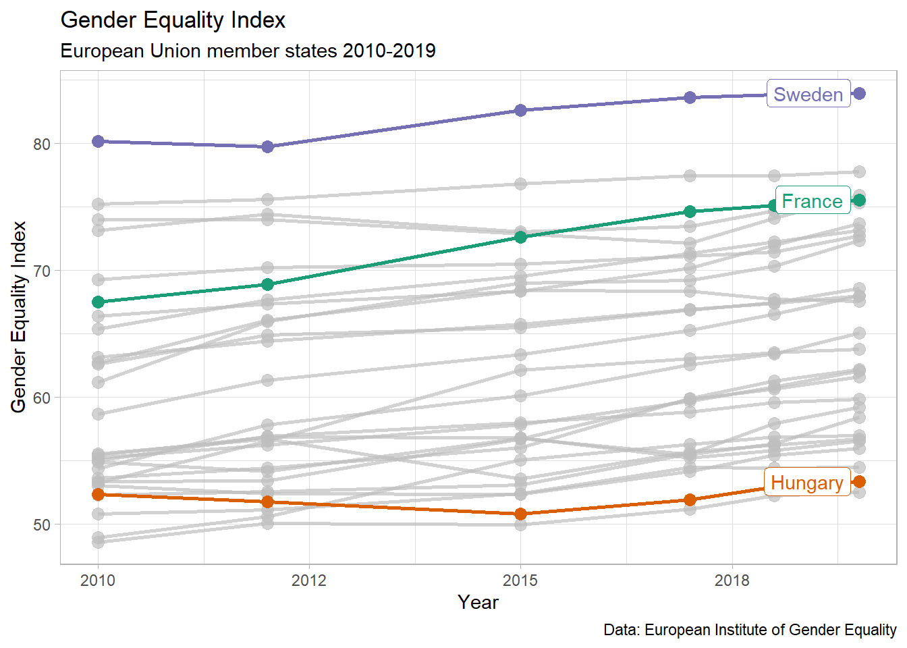

df %>%ggplot(aes(year, gender_equality_index, colour = country_name)) +geom_point(cex =3) +geom_line(cex =1) + gghighlight::gghighlight(country_name %in%c("France", "Sweden", "Hungary")) +scale_x_continuous(labels = scales::number_format(big.mark ="", accuracy =1)) +scale_color_brewer(palette ="Dark2") +labs(x ="Year",y ="Gender Equality Index",caption ="Data: European Institute of Gender Equality",title ="Gender Equality Index",subtitle ="European Union member states 2010-2019" )
Warning: Tried to calculate with group_by(), but the calculation failed.
Falling back to ungrouped filter operation...
Tried to calculate with group_by(), but the calculation failed.
Falling back to ungrouped filter operation...
label_key: country_name

We want to compare changes in country positions over time, rather than absolute values for the gender equality index.
We can use the rank function from dplyr to calculate the rank of each country across our 6 years from 2010 to 2019. The desc function within the rank function means that our highest scoring nation, Sweden, will get the value 1, rather than 28 in our rank column.
# A tibble: 168 × 4
year country_name gender_equality_index rank
<dbl> <chr> <dbl> <dbl>
1 2010 Sweden 80.1 1
2 2010 Denmark 75.2 2
3 2010 Netherlands 74.0 3
4 2010 Finland 73.1 4
5 2010 Belgium 69.3 5
6 2010 France 67.5 6
7 2010 Spain 66.4 7
8 2010 Ireland 65.4 8
9 2010 European Union 63.1 9
10 2010 Slovenia 62.7 10
# … with 158 more rows
We can draw our first version of the plot we want to create! We will again highlight our three comparator countries to reduce the clutter on the chart.
Warning: Tried to calculate with group_by(), but the calculation failed.
Falling back to ungrouped filter operation...
label_key: country_name
Notice here that Sweden, our highest ranked country, is at the bottom of the y-axis. Instead, we should invert the y-axis with the ggplot call scale_y_reverse().